Projeto completo: Dashboard de Vendas do zero ao painel final
Cinco planilhas importadas, tratadas no Power Query, unidas numa base geral, modeladas em estrela, calculadas com DAX e apresentadas num dashboard moderno de duas páginas. É a aula que junta tudo o que você aprendeu até aqui.
- Nível
- Básico → Intermediário
- Duração
- 4 a 6 horas (2 encontros)
- Você vai precisar
- Power BI Desktop (gratuito, Windows)
- Conteúdos
- Power QueryLocalidadeAcrescentarModelo estreladCalendarioSUMXRELATEDALLSELECTEDDATEADDSAMEPERIODLASTYEARTOTALYTDTema JSONLayout 1920×1080
01Onde vamos chegar
Antes de começar, olhe o destino. Você vai reproduzir este painel com a base da empresa.

| Indicador | Valor com a base completa |
|---|---|
| Faturamento total | R$ 15.226.080,56 |
| Lucro total | R$ 11.365.235,66 |
| Margem | 74,6% |
| Pedidos | 25.164 |
| Ticket médio | R$ 605,07 |
| Linhas na base geral | 56.046 |
Ao final, seus cartões devem mostrar exatamente esses números. Se der diferente, a causa quase sempre é o preço convertido errado (passo 6) ou vendas duplicadas (passo 9).
Agora adotamos prefixos: d = dimensão (dClientes, dProdutos, dCalendario) e f = fato (fVendas). Facilita ler o modelo e o DAX. É o mesmo projeto das aulas 2 a 5, com nomes profissionais.
02Parte 1 · Importação das planilhas
Objetivo: trazer as 5 planilhas para o Power Query sem carregar nada ainda no modelo.
Crie Documentos\PowerBI_Vendas\Bases e coloque lá:
Base Vendas - 2020.xlsx(2.630 linhas),2021(23.935) e2022(29.481, só janeiro a junho);Cadastro Clientes.xlsx(18.148 clientes, com 2 linhas vazias no topo);Cadastro Produtos.xlsx(293 SKUs, preços gravados como texto).
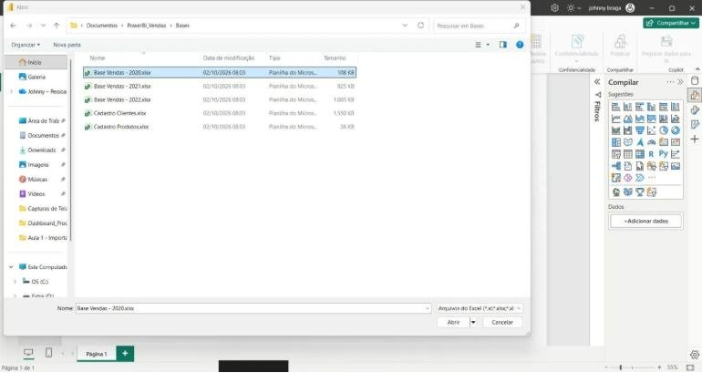
Na tela inicial clique em Relatório em branco. Se aparecer a faixa amarela de recuperação automática, feche.
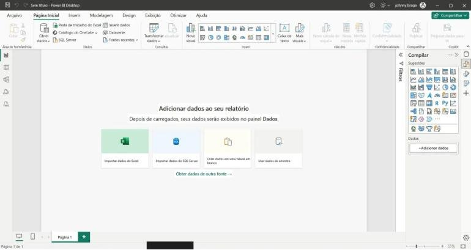
Em Página Inicial clique em Pasta de trabalho do Excel, abra Base Vendas - 2020.xlsx, marque Plan1 e clique em Transformar Dados (nunca em Carregar: queremos tratar antes).
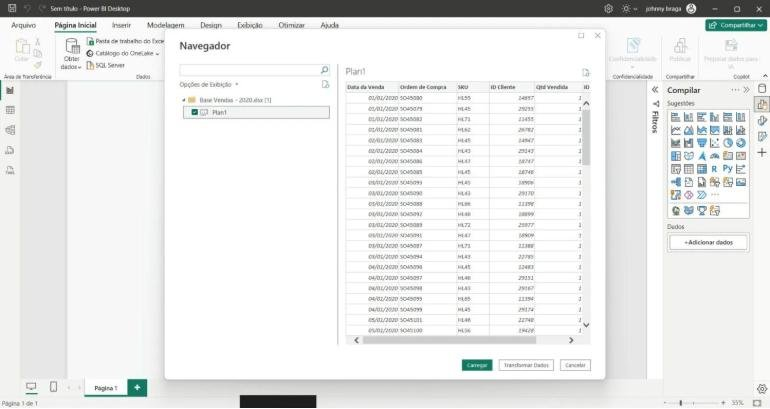
Renomeie a consulta em Propriedades › Nome para Vendas 2020. Ative Exibição → Qualidade da coluna e Perfil da coluna, e no rodapé troque para “Criação de perfil com base em todo o conjunto de dados” para validar a base inteira.
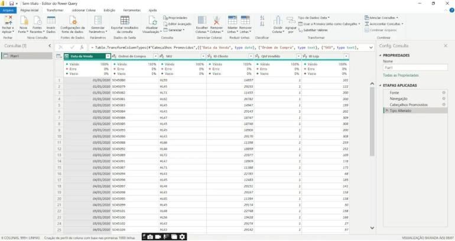
Página Inicial › Nova Fonte › Pasta de Trabalho do Excel. Repita para 2021, 2022, Cadastro Clientes e Cadastro Produtos, sempre marcando Plan1 › OK. Renomeie (duplo clique): Vendas 2021, Vendas 2022, dClientes, dProdutos.

Repare: o Cadastro Clientes chega com Column1, Column2… e duas linhas null antes do cabeçalho real. Vamos tratar no passo 7.
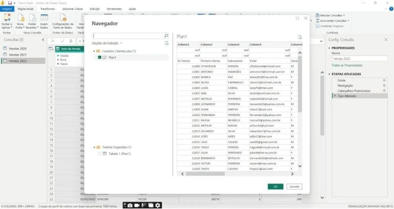
03Parte 2 · Tratamento no Power Query
Três problemas reais: preço em texto com ponto decimal, cadastro de clientes com lixo no topo e vendas espalhadas em três arquivos.
Os preços estão gravados como texto no padrão americano: 25.95. Com o Windows em português, a detecção automática lê o ponto como separador de milhar e transforma 25.95 em 2595. O faturamento fica 100 vezes maior e nenhum erro aparece.
- Exclua a etapa automática Tipo Alterado (X ao lado da etapa).
- Selecione
Preço Unitario, segure Ctrl e selecioneCusto Unitario.
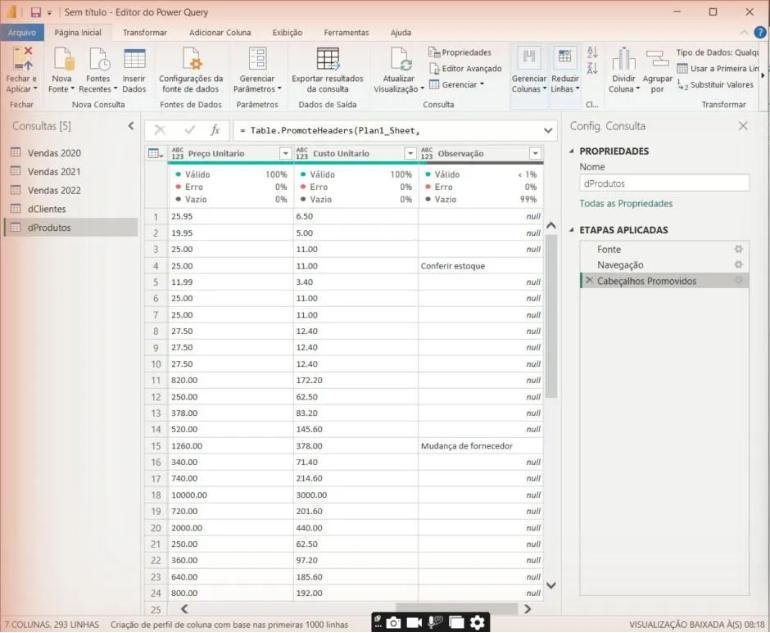
Botão direito sobre uma das colunas selecionadas → Alterar Tipo → Usando a Localidade…
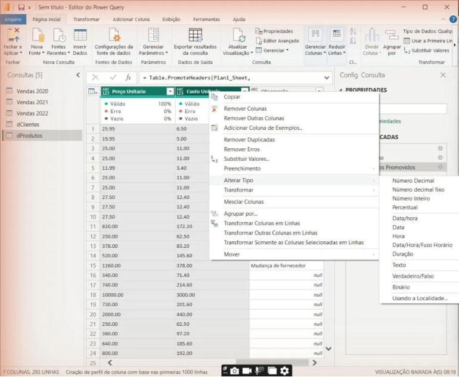
Tipo de Dados: Número Decimal. Localidade: Inglês (Estados Unidos) → OK.
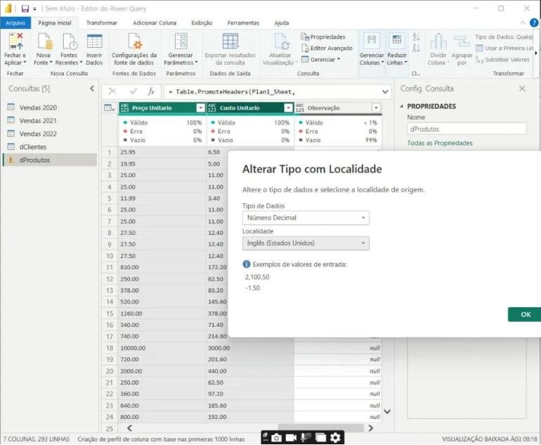
Agora aparecem 25,95 · 19,95 · 11,99. Remova também a coluna Observação (99% vazia) e defina SKU, Produto, Marca e Categoria como Texto.
= Table.TransformColumnTypes(
#"Cabeçalhos Promovidos",
{{"Preço Unitario", type number}, {"Custo Unitario", type number}},
"en-US"
)Esse é o tipo de erro que derruba a credibilidade de um analista: o painel fica lindo e o número está 100 vezes errado. Sempre confira valores conhecidos (preço de um produto) depois de converter tipos.
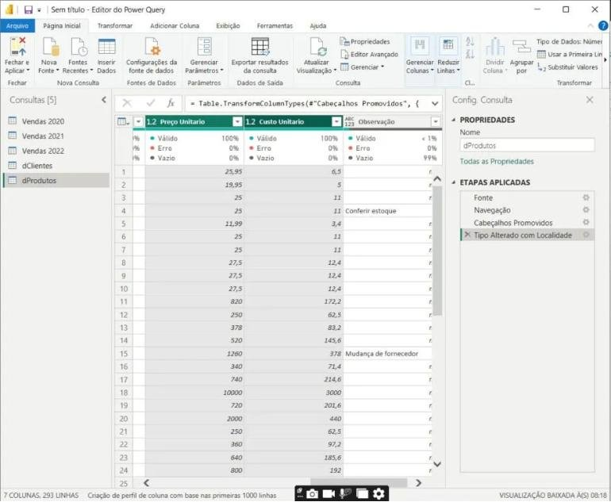
Página Inicial › Reduzir Linhas › Remover Linhas › Remover Linhas Superiores.
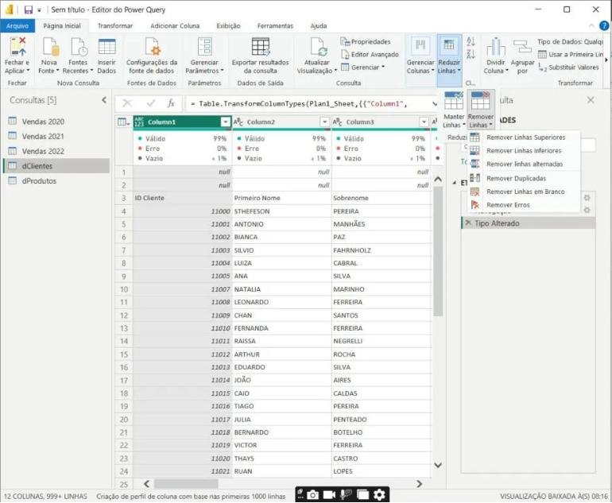
Digite 2 e clique em OK.
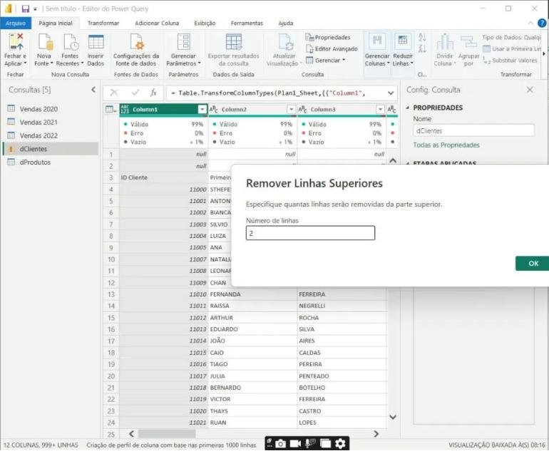
Transformar › Usar a Primeira Linha como Cabeçalho. Exclua a etapa automática de tipo que aparecer: ela converteria Documento em número e apagaria zeros à esquerda (ex.: 04013622223). Remova Column11 e Column12.
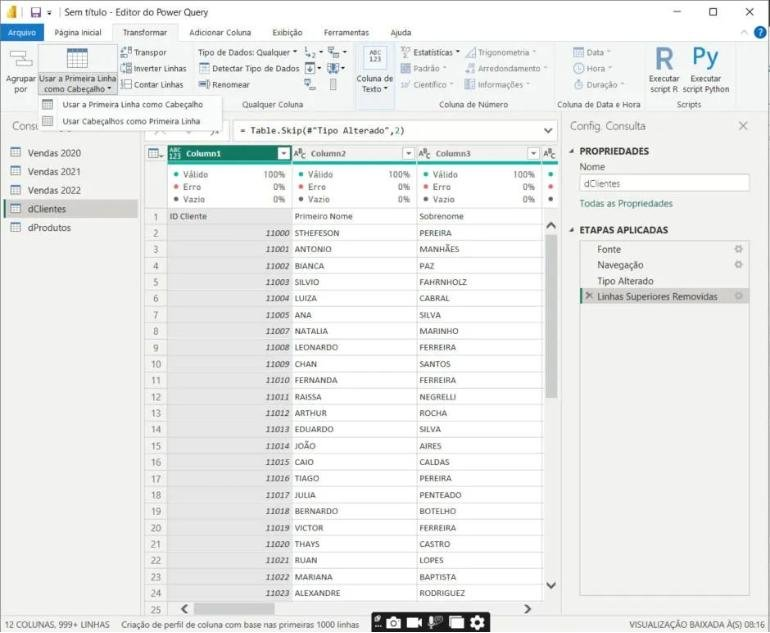
Documento→ tipo Texto.Data Nascimentovem como M/D/AAAA (4/8/1966): ícone de tipo › Usando a Localidade… › Data + Inglês (Estados Unidos).ID ClienteeNum Filhos→ Número Inteiro.
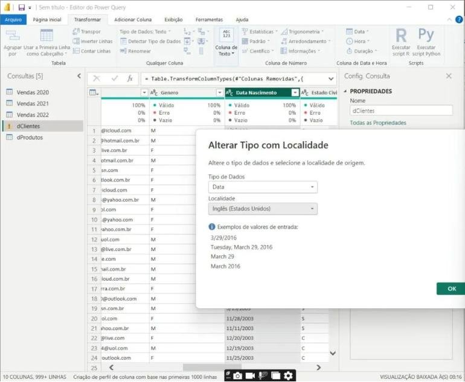
Botão direito em Genero › Substituir Valores: M → Masculino; repita F → Feminino. Em Estado Civil: C → Casado; S → Solteiro.
Funciona porque a coluna só tem M ou F. Em colunas com texto livre, abra Opções avançadas e marque Coincidir conteúdo da célula inteira.
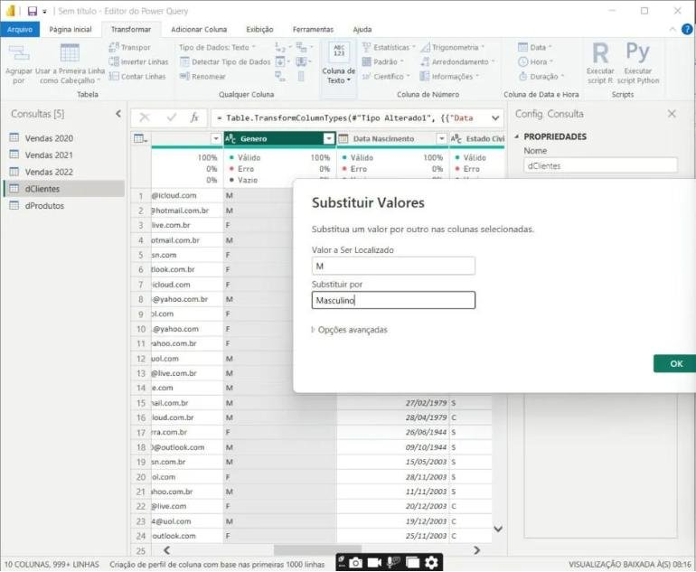
Selecione Primeiro Nome + Sobrenome › Adicionar Coluna › Mesclar Colunas › separador Espaço › nome Nome Completo.
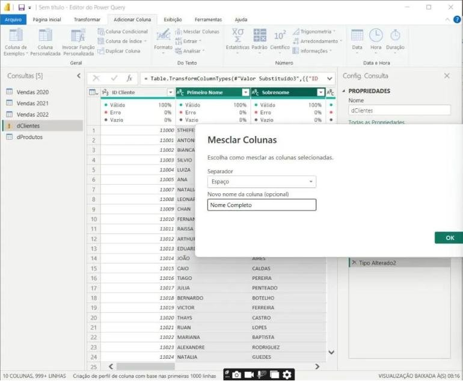
Confira as Etapas Aplicadas e o Documento com zeros à esquerda preservados.
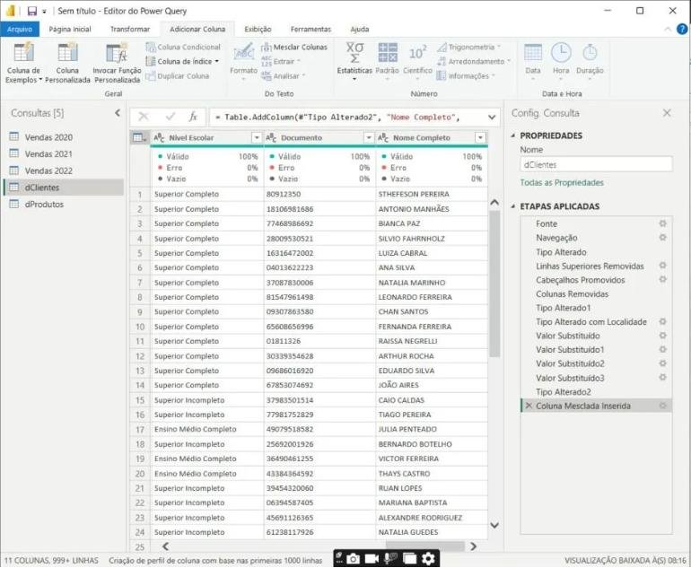
Selecione Vendas 2020 › Página Inicial › Acrescentar Consultas ▾ › Acrescentar Consultas como Novas. Marque Três ou mais tabelas, adicione Vendas 2021 e Vendas 2022 › OK. Renomeie Acrescentar1 para fVendas.
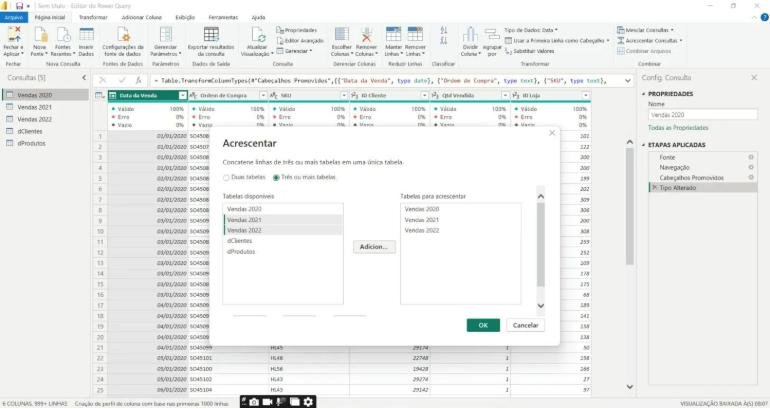
let
Fonte = Table.Combine({#"Vendas 2020", #"Vendas 2021", #"Vendas 2022"})
in
FonteCom as bases anuais numa subpasta só delas, use Obter Dados › Pasta › Combinar e Transformar. Uma base 2023 colocada na pasta entra sozinha na próxima atualização (aula 9).
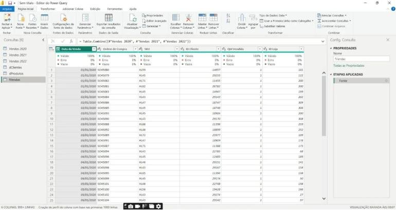
Botão direito em Vendas 2020, 2021 e 2022 › desmarque Habilitar carga (o nome fica em itálico). Depois, Fechar e Aplicar.
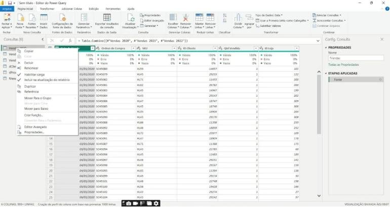
04Parte 3 · Modelagem em estrela
Uma fato no centro (fVendas) e dimensões em volta, relacionadas de 1 para muitos com filtro de direção única.
O Power BI detectou as chaves sozinho. Confira em Página Inicial › Gerenciar relações:
| De (muitos *) | Para (um 1) | Filtro |
|---|---|---|
| fVendas[SKU] | dProdutos[SKU] | Único |
| fVendas[ID Cliente] | dClientes[ID Cliente] | Único |
| fVendas[Data da Venda] | dCalendario[Date] | Único (passo 11) |
Se a detecção não ocorrer, arraste a coluna da fato até a chave da dimensão.
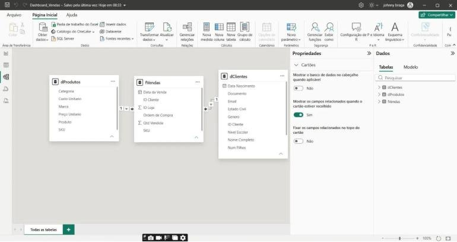
Exibição de Tabela › Nova tabela e cole:
dCalendario =
VAR DataInicio = DATE ( YEAR ( MIN ( fVendas[Data da Venda] ) ), 1, 1 )
VAR DataFim = MAX ( fVendas[Data da Venda] )
RETURN
ADDCOLUMNS (
CALENDAR ( DataInicio, DataFim ),
"Ano", YEAR ( [Date] ),
"Mês Num", MONTH ( [Date] ),
"Mês", FORMAT ( [Date], "mmm" ),
"Ano-Mês", FORMAT ( [Date], "yyyy-mm" ),
"Trimestre", "T" & QUARTER ( [Date] ),
"Dia da Semana", FORMAT ( [Date], "ddd" ),
"Dia Semana Num", WEEKDAY ( [Date], 2 )
)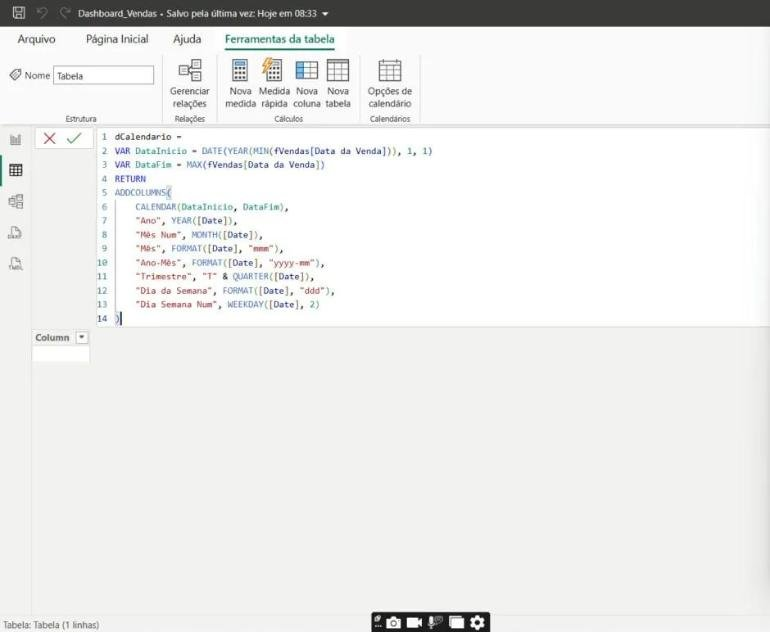
- Botão direito em dCalendario › Marcar como tabela de datas › coluna Date.
- Selecione a coluna Mês › Classificar por coluna › Mês Num; faça o mesmo com Dia da Semana por Dia Semana Num. Sem isso, os meses saem em ordem alfabética (abr, ago, dez…).
- Arraste
fVendas[Data da Venda]atédCalendario[Date].
A base 2022 só tem o 1º semestre. Encerrar o calendário na última venda faz o SAMEPERIODLASTYEAR comparar jan–jun/2022 com jan–jun/2021, e não com o ano inteiro.

Confira as três relações ativas, todas muitos-para-um a partir da fVendas.
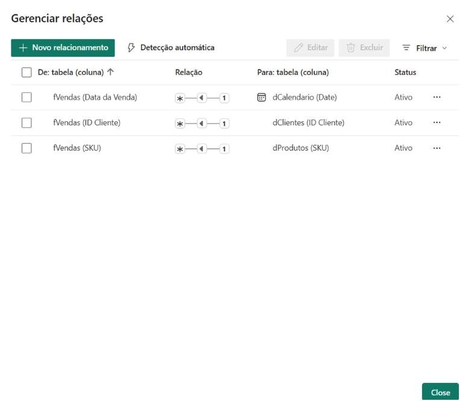
05Parte 4 · Medidas DAX
Medidas numa tabela própria (_Medidas), organizadas em pastas de exibição.
Nova tabela: _Medidas = ROW("x", BLANK()) e oculte a coluna x. Selecione _Medidas › Nova medida:
Faturamento Total =
SUMX (
fVendas,
fVendas[Qtd Vendida] * RELATED ( dProdutos[Preço Unitario] )
)Na aula 5 você criou colunas de preço e faturamento. Aqui, SUMX percorre a fVendas linha a linha, multiplica a quantidade pelo preço buscado com RELATED e soma, tudo dentro da medida. O modelo fica mais leve: nenhuma coluna nova é gravada.
Formato: Moeda R$, 2 casas.
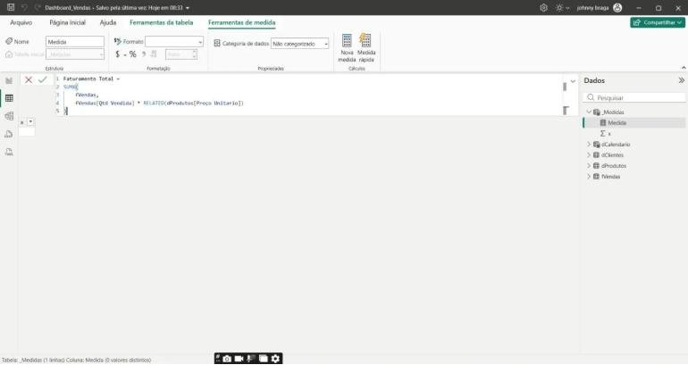
Custo Total =
SUMX ( fVendas, fVendas[Qtd Vendida] * RELATED ( dProdutos[Custo Unitario] ) )
Lucro Total = [Faturamento Total] - [Custo Total]
Margem % = DIVIDE ( [Lucro Total], [Faturamento Total] )
Ticket Médio = DIVIDE ( [Faturamento Total], [Nº Pedidos] )
% Faturamento s/ Total =
DIVIDE (
[Faturamento Total],
CALCULATE ( [Faturamento Total], ALLSELECTED ( dProdutos ) )
)% Faturamento s/ Total calcula a participação de cada produto/categoria dentro do que está selecionado nas segmentações. ALLSELECTED ignora o filtro da linha do visual, mas respeita os filtros externos (ano, marca).
Qtd Vendida = SUM ( fVendas[Qtd Vendida] ) Nº Pedidos = DISTINCTCOUNT ( fVendas[Ordem de Compra] ) Clientes Ativos = DISTINCTCOUNT ( fVendas[ID Cliente] ) Lojas Ativas = DISTINCTCOUNT ( fVendas[ID Loja] )
Faturamento Mês Anterior =
CALCULATE ( [Faturamento Total], DATEADD ( dCalendario[Date], -1, MONTH ) )
Crescimento % Mensal =
DIVIDE ( [Faturamento Total] - [Faturamento Mês Anterior], [Faturamento Mês Anterior] )
Faturamento Ano Anterior =
VAR UltimoAno = MAX ( dCalendario[Ano] )
VAR DatasAno =
CALCULATETABLE (
VALUES ( dCalendario[Date] ),
KEEPFILTERS ( dCalendario[Ano] = UltimoAno )
)
RETURN
CALCULATE ( [Faturamento Total], SAMEPERIODLASTYEAR ( DatasAno ) )
Crescimento YoY % =
VAR UltimoAno = MAX ( dCalendario[Ano] )
VAR FatAtual =
CALCULATE ( [Faturamento Total], KEEPFILTERS ( dCalendario[Ano] = UltimoAno ) )
RETURN
DIVIDE ( FatAtual - [Faturamento Ano Anterior], [Faturamento Ano Anterior] )
Faturamento Acumulado (YTD) =
TOTALYTD ( [Faturamento Total], dCalendario[Date] )Sem filtro de ano, um SAMEPERIODLASTYEAR simples desloca o período inteiro e devolve +369%, um número sem sentido. Fixando o último ano visível, o cartão mostra jan–jun/2022 contra jan–jun/2021 (+564,8%) e, com o filtro em 2021, 2021 contra 2020 (+174,0%).
A aula 10 é inteira sobre inteligência de tempo. Aqui basta copiar e entender a ideia.
Selecione a medida › Propriedades › Pasta de exibição: 1. Financeiro, 2. Volume, 3. Inteligência de Tempo. Crie na ordem em que uma depende da outra (Faturamento antes de Lucro, Nº Pedidos antes de Ticket Médio).
| Medida | Formato | Valor (total) |
|---|---|---|
| Faturamento Total | R$ #.##0,00 | R$ 15.226.080,56 |
| Custo Total | R$ #.##0,00 | R$ 3.860.844,90 |
| Lucro Total | R$ #.##0,00 | R$ 11.365.235,66 |
| Margem % | 0,0% | 74,6% |
| Nº Pedidos | #.##0 | 25.164 |
| Ticket Médio | R$ #.##0,00 | R$ 605,07 |
| Qtd Vendida | #.##0 | 84.174 |
| Clientes Ativos | #.##0 | 17.416 |
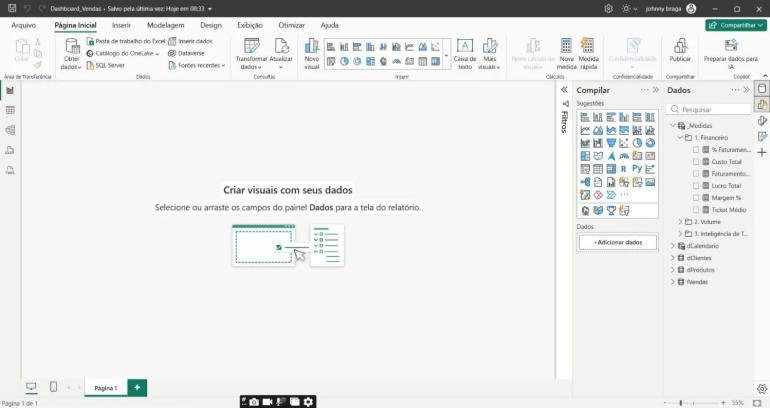
06Parte 5 · Dashboard moderno
Tema JSON próprio, página 1920×1080, margem de 24 px e 16 px entre blocos.
Baixe o tema e aplique em Design (ou Exibição) › Temas › Procurar temas / Importar tema.
{
"name": "Vendas Moderno",
"dataColors": ["#4F46E5", "#06B6D4", "#F59E0B", "#10B981", "#EC4899", "#8B5CF6", "#EF4444"],
"visualStyles": {
"page": {"*": {"background": [{"color": {"solid": {"color": "#EEF2F7"}}, "transparency": 0}]}},
"*": {"*": {
"border": [{"show": true, "color": {"solid": {"color": "#E2E8F0"}}, "radius": 12}],
"dropShadow": [{"show": true, "preset": "BottomRight", "transparency": 80}],
"visualHeader": [{"show": false}]
}}
}
}Em Formato da página › Configurações de tela, defina tamanho Personalizado 1920 × 1080.
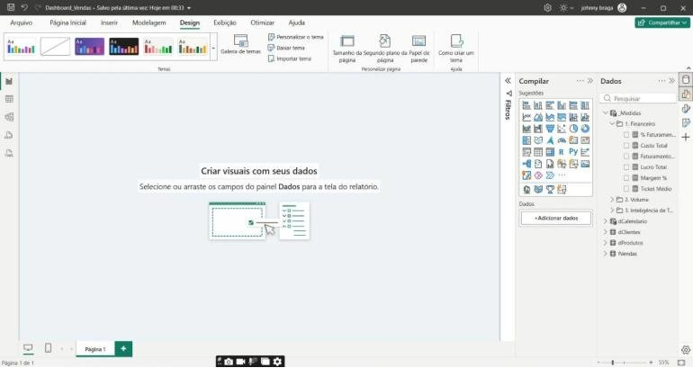
Clique numa área vazia, escolha Cartão e marque Faturamento Total. Posição e tamanho exatos ficam em Formato › Geral › Propriedades.
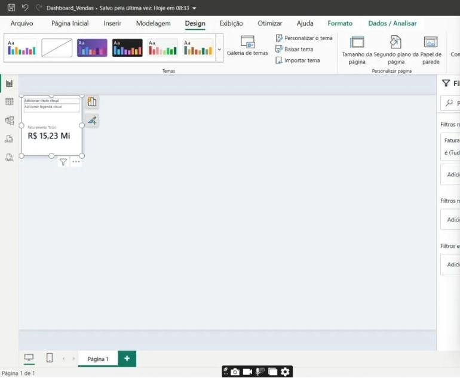
| Visual | Campos | X, Y | L × A |
|---|---|---|---|
| Caixa de texto (título) | “Dashboard de Vendas” + subtítulo | 24, 16 | 1000 × 80 |
| 3 Segmentações (lista suspensa) | dCalendario[Ano] · dProdutos[Categoria] · dProdutos[Marca] | 1084/1360/1636, 16 | 260 × 80 |
| 6 Cartões | Faturamento, Custo, Lucro, Margem %, Nº Pedidos, Ticket Médio | 24 + 314·i, 112 | 298 × 140 |
| Gráfico de áreas | Eixo: dCalendario[Ano-Mês] · Y: Faturamento Total | 24, 268 | 1200 × 380 |
| Treemap | Categoria · Faturamento Total | 1240, 268 | 656 × 380 |
| Barras clusterizadas | dProdutos[Marca] · Faturamento Total | 24, 664 | 600 × 400 |
| Colunas clusterizadas | dCalendario[Ano] · Faturamento + Lucro | 640, 664 | 600 × 400 |
| Tabela | Produto · Faturamento · Qtd Vendida · Margem % | 1256, 664 | 640 × 400 |
Acabamento: desligue o subtítulo automático e escreva títulos que respondem a uma pergunta (“Faturamento por Mês”, “Ranking de Produtos”).
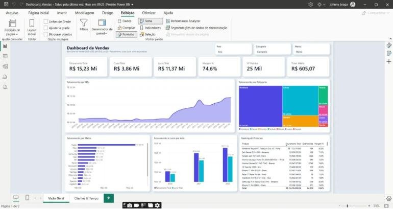
| Visual | Campos |
|---|---|
| Segmentações | Ano · Categoria · dClientes[Genero] |
| 6 Cartões | Clientes Ativos, Lojas Ativas, Qtd Vendida, Faturamento Ano Anterior, Crescimento YoY %, Faturamento Acumulado (YTD) |
| Pizza | dClientes[Genero] · Faturamento Total |
| Barras | dClientes[Nivel Escolar] · Faturamento Total |
| Linha e colunas | dClientes[Estado Civil] · Colunas: Faturamento · Linha: Ticket Médio |
| Linhas | Eixo: dCalendario[Mês] · Legenda: Ano · Y: Faturamento (sazonalidade) |
| Colunas | dCalendario[Dia da Semana] · Nº Pedidos |
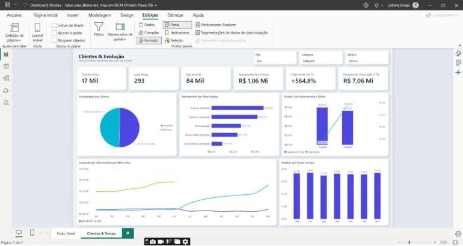
Clique em 2021 no gráfico “Faturamento x Lucro por Ano”: todos os visuais filtram juntos. Clique de novo para limpar. Salve como Dashboard_Vendas_Final.pbix.
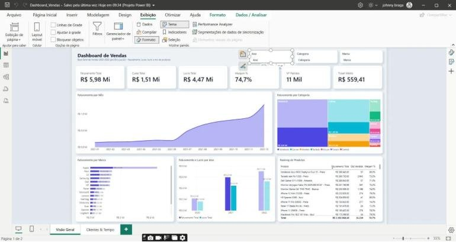
07Parte 6 · O que o dashboard responde
Um dashboard só vale pelas perguntas que ele responde. Estas são as conclusões com a base completa.
Faturamento por ano
| Ano | Faturamento |
|---|---|
| 2020 | R$ 2,18 Mi |
| 2021 | R$ 5,98 Mi |
| 2022 (jan–jun) | R$ 7,06 Mi |
O 1º semestre de 2022 (R$ 7,06 Mi) foi 6,6 vezes o 1º semestre de 2021 (R$ 1,06 Mi). Por que importa: mostra uma virada de patamar no negócio, que pede investigação (nova loja? campanha? canal online?).
Rentabilidade por categoria
| Categoria | Faturamento | Custo | Margem | Qtd |
|---|---|---|---|---|
| Notebook | R$ 7.469.356,74 | R$ 1.799.254,40 | 75,9% | 6.262 |
| Celular | R$ 4.429.261,00 | R$ 1.076.408,70 | 75,7% | 7.667 |
| Monitor | R$ 1.705.621,95 | R$ 476.538,10 | 72,1% | 7.543 |
| Teclado | R$ 758.816,58 | R$ 199.489,50 | 73,7% | 14.301 |
| Mouse | R$ 427.425,79 | R$ 121.970,90 | 71,5% | 35.965 |
| Casaco | R$ 288.666,00 | R$ 122.169,10 | 57,7% | 6.680 |
| Camisa | R$ 146.932,50 | R$ 65.014,20 | 55,8% | 5.756 |
Notebook + Celular = 78% do faturamento. Mouse é o campeão de unidades, mas fatura pouco. Por que importa: volume e valor contam histórias diferentes; estoque se planeja por unidades, meta financeira por faturamento.
Marcas e clientes
- Apple sozinha responde por 29% do faturamento (R$ 4,45 Mi), seguida de Asus (1,44), LG (1,42), Samsung (1,35), Dell (1,32) e HP (1,29). Dependência de um fornecedor é risco.
- 17.416 clientes compraram. Gênero equilibrado: Masculino R$ 7,72 Mi (50,7%) e Feminino R$ 7,51 Mi (49,3%).
- Casados faturam mais (R$ 7,98 Mi), mas solteiros têm ticket maior (R$ 637,66 contra R$ 578,21).
- Ticket médio cai de R$ 628 (superior completo) para R$ 504 (médio incompleto).
Tendência e pontos de atenção
- Virada em jul/2021: o faturamento mensal saiu de cerca de R$ 0,2 Mi para R$ 1,3 Mi em dez/2021. Melhor mês da série: jun/2022, com R$ 1.416.677,89.
- Vestuário (Casaco e Camisa, marca Hashtag) tem margem de 56–58%, quase 20 pontos abaixo dos eletrônicos.
- Ticket médio caiu de R$ 830 (2020) para R$ 596 (2022): mais pedidos com itens de menor valor (mouse, teclado).
08Código M completo das consultas
Para conferir ou recriar. Ajuste o caminho da pasta para o seu computador.
let
Fonte = Excel.Workbook(File.Contents("C:\Users\SeuUsuario\Documents\PowerBI_Vendas\Bases\Base Vendas - 2020.xlsx"), null, true),
Plan1_Sheet = Fonte{[Item="Plan1", Kind="Sheet"]}[Data],
#"Cabeçalhos Promovidos" = Table.PromoteHeaders(Plan1_Sheet, [PromoteAllScalars=true]),
#"Tipo Alterado" = Table.TransformColumnTypes(#"Cabeçalhos Promovidos", {
{"Data da Venda", type date}, {"Ordem de Compra", type text}, {"SKU", type text},
{"ID Cliente", Int64.Type}, {"Qtd Vendida", Int64.Type}, {"ID Loja", Int64.Type}})
in
#"Tipo Alterado"let
Fonte = Excel.Workbook(File.Contents("C:\Users\SeuUsuario\Documents\PowerBI_Vendas\Bases\Cadastro Produtos.xlsx"), null, true),
Plan1_Sheet = Fonte{[Item="Plan1", Kind="Sheet"]}[Data],
#"Cabeçalhos Promovidos" = Table.PromoteHeaders(Plan1_Sheet, [PromoteAllScalars=true]),
#"Tipo Alterado com Localidade" = Table.TransformColumnTypes(#"Cabeçalhos Promovidos",
{{"Preço Unitario", type number}, {"Custo Unitario", type number}}, "en-US"),
#"Colunas Removidas" = Table.RemoveColumns(#"Tipo Alterado com Localidade", {"Observação"}),
#"Tipo Alterado" = Table.TransformColumnTypes(#"Colunas Removidas", {
{"SKU", type text}, {"Produto", type text}, {"Marca", type text}, {"Categoria", type text}})
in
#"Tipo Alterado"let
Fonte = Excel.Workbook(File.Contents("C:\Users\SeuUsuario\Documents\PowerBI_Vendas\Bases\Cadastro Clientes.xlsx"), null, true),
Plan1_Sheet = Fonte{[Item="Plan1", Kind="Sheet"]}[Data],
#"Linhas Superiores Removidas" = Table.Skip(Plan1_Sheet, 2),
#"Cabeçalhos Promovidos" = Table.PromoteHeaders(#"Linhas Superiores Removidas", [PromoteAllScalars=true]),
#"Colunas Removidas" = Table.RemoveColumns(#"Cabeçalhos Promovidos", {"Column11", "Column12"}),
#"Documento Texto" = Table.TransformColumnTypes(#"Colunas Removidas", {{"Documento", type text}}),
#"Tipo Alterado com Localidade" = Table.TransformColumnTypes(#"Documento Texto", {{"Data Nascimento", type date}}, "en-US"),
#"Genero M" = Table.ReplaceValue(#"Tipo Alterado com Localidade", "M", "Masculino", Replacer.ReplaceText, {"Genero"}),
#"Genero F" = Table.ReplaceValue(#"Genero M", "F", "Feminino", Replacer.ReplaceText, {"Genero"}),
#"Civil C" = Table.ReplaceValue(#"Genero F", "C", "Casado", Replacer.ReplaceText, {"Estado Civil"}),
#"Civil S" = Table.ReplaceValue(#"Civil C", "S", "Solteiro", Replacer.ReplaceText, {"Estado Civil"}),
#"Tipo Alterado" = Table.TransformColumnTypes(#"Civil S", {
{"ID Cliente", Int64.Type}, {"Num Filhos", Int64.Type}, {"Primeiro Nome", type text},
{"Sobrenome", type text}, {"Email", type text}, {"Nivel Escolar", type text}}),
#"Coluna Mesclada Inserida" = Table.AddColumn(#"Tipo Alterado", "Nome Completo",
each Text.Combine({[Primeiro Nome], [Sobrenome]}, " "), type text)
in
#"Coluna Mesclada Inserida"09Atividades
A1 · Bata os números
BásicoConfira se os seus cartões batem com a tabela de gabarito da Parte 4. Se algum não bater, descubra a causa e escreva qual era.
A2 · Top 5 produtos
BásicoNa tabela “Ranking de Produtos”, aplique um filtro N superior = 5 por Faturamento Total.
A3 · Margem por marca
IntermediárioCrie um gráfico de barras com Marca e Margem %, ordenado do maior para o menor. Qual marca é a mais rentável? E a menos?
A4 · Página de produtos
IntermediárioCrie uma terceira página “Produtos” com: segmentação de categoria, matriz Categoria → Produto com Faturamento, Lucro e Margem, e um gráfico de dispersão Qtd Vendida × Margem % por produto.
A5 · Relatório executivo
EntregaEscreva 5 conclusões sobre o negócio (cada uma com um número do painel) e 2 recomendações para a diretoria. Apresente em 3 minutos usando o dashboard.
10Resumo da aula
- Converta preços em texto com Usando a Localidade e confira valores conhecidos.
- Remova lixo do topo, promova cabeçalhos e mantenha documentos como texto.
- Uma fato (fVendas) cercada de dimensões: o modelo estrela.
- dCalendario marcada como tabela de datas, com meses classificados por número.
SUMX+RELATEDcalculam o faturamento sem colunas extras.- Tema JSON e grade de layout dão cara profissional ao painel.